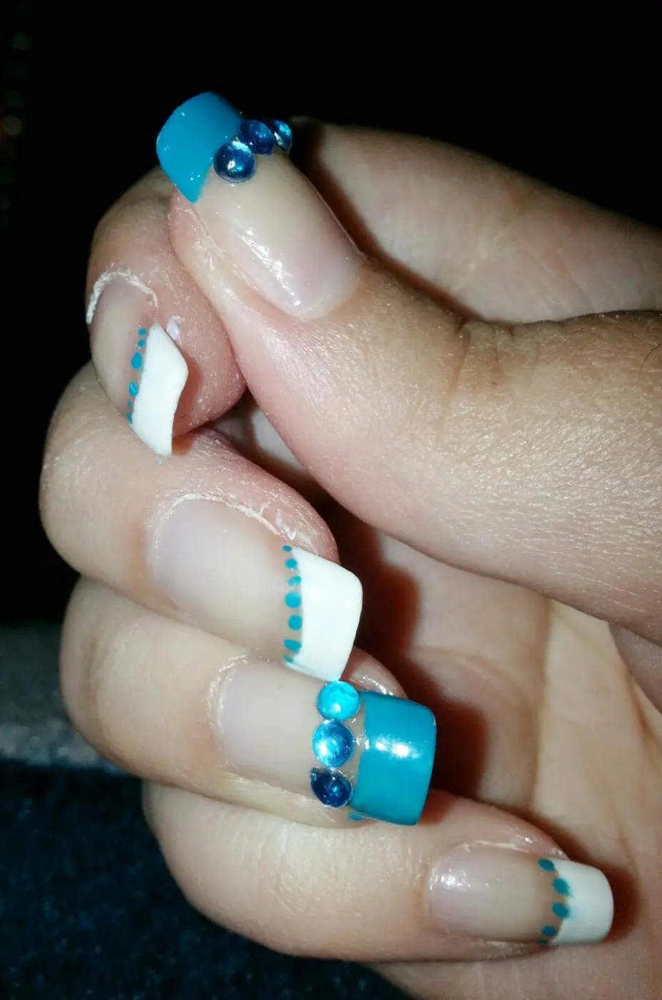

proposta di Aprile nail art
Salve fanciulle.
Come va? Qui tutto bene.. tra sole e vento ancora alle prese con le medicine ma vabbè.. speriamo che con l'arrivo della primavera questi tempi si decidano ad uscire come si deve..
Beh e approfittando che questo è il mio mese,il 16 è il mio compleanno, ho pensato a una nail art che si potesse adattare alla magliettina che metterò quel giorno..anche perché non manca molto,quindi oggi mi sono armata di pazienza e attrezzi e mi sono messa in opera per me stessa..
Semplice come al solito naturalmente, non sono portata per le cose estrose..
Ho optato per un colore che in realtà non saprei come definire, se un blu petrolio o un boh ahahahahahahahah
mi dovete scusare ma ho dimenticato di leggere il numero..Comunque è un Kiko e poi c'è il bianco..e per finire i brillantini azzurri..Vi mostro la foto..

Et voilà..tutto french brillantini e puntini..
So che ho fatto una recensione un pò alla cane ahahahah ma ho poco tempo e volevo assolutamente farvi vedere questa mia proposta che a me piace molto..
ditemi la vostra :*
baci bacini